Subcontrata de tabiqueríaAlicante · Murcia · Valencia
Tabiquería de ladrillo para promotoras y constructoras
Tabiquería interior y cerramientos con equipo propio. Más de 10 años en obra y capacidad disponible para nuevos proyectos.
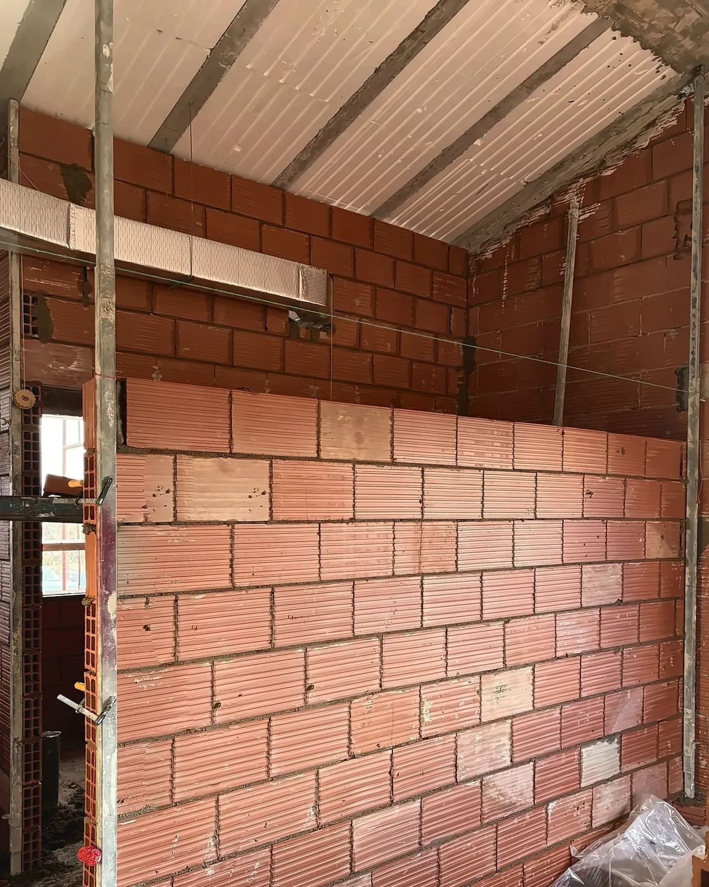
Subcontrata de tabiqueríaAlicante · Murcia · Valencia
Tabiquería interior y cerramientos con equipo propio. Más de 10 años en obra y capacidad disponible para nuevos proyectos.
Quiénes somos
En Tabian nos dedicamos a la tabiquería de ladrillo y los cerramientos. Trabajamos para promotoras y constructoras en Alicante, Murcia y Valencia, ejecutando cada sistema según proyecto y con el mismo equipo de principio a fin.
02 / 08
Sistemas
Ejecutamos cada sistema según proyecto, con el mismo equipo de principio a fin.

Tabiquería interior y distribución de viviendas, trasdosados y divisiones. Buena planeidad para guarnecer o alicatar.

Muros con más resistencia y aislamiento acústico: medianeras, separación entre viviendas y cerramientos.

Bloque cerámico de gran formato para muros de carga y fachadas de una hoja, con buen aislamiento térmico y acústico.

Muros resistentes para naves, garajes, vallados, muros de contención y vasos de piscina.
03 / 08
Cómo trabajamos
Un proceso sencillo y claro desde el primer contacto, con un responsable de obra como interlocutor directo.
Revisamos el proyecto y visitamos la obra para medir y conocer los plazos y las condiciones.
Presupuesto cerrado por metro cuadrado y por partidas, sin sorpresas durante la obra.
Replanteo y ejecución con nuestro propio equipo, coordinados con la dirección de obra y el resto de oficios.
Repaso final y entrega lista para el siguiente oficio: guarnecido, alicatado o revestimiento.
04 / 08
En ejecución
Ejecución de los cerramientos de ladrillo de una promoción de 11 viviendas unifamiliares adosadas, repartidas en tres bloques.
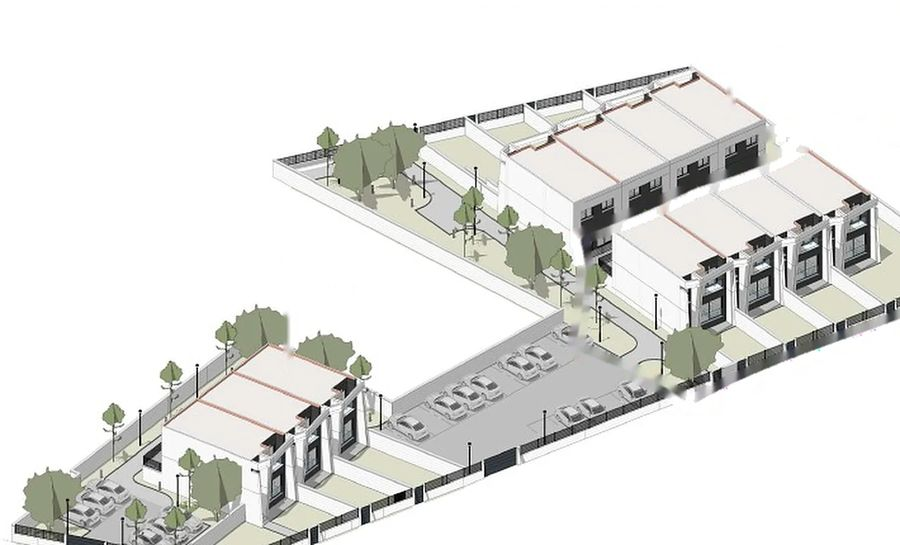
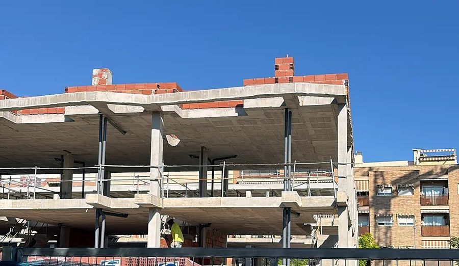
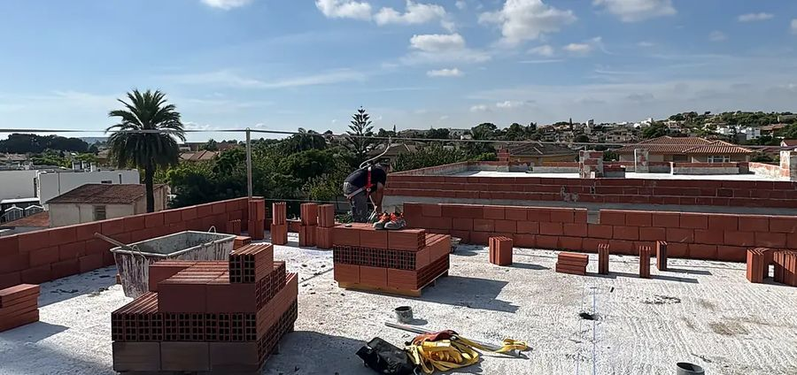
Ejecución de las fachadas y medianeras de ladrillo de un edificio residencial de 5 viviendas y 2 áticos.
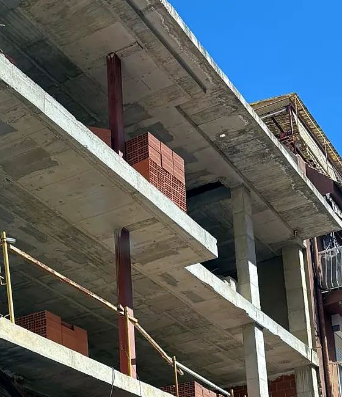
05 / 08
Obras realizadas
Cerramientos de fachada con bloque termoarcilla entre la estructura de hormigón, en planta baja y primera, incluidos los huecos de ventanas.
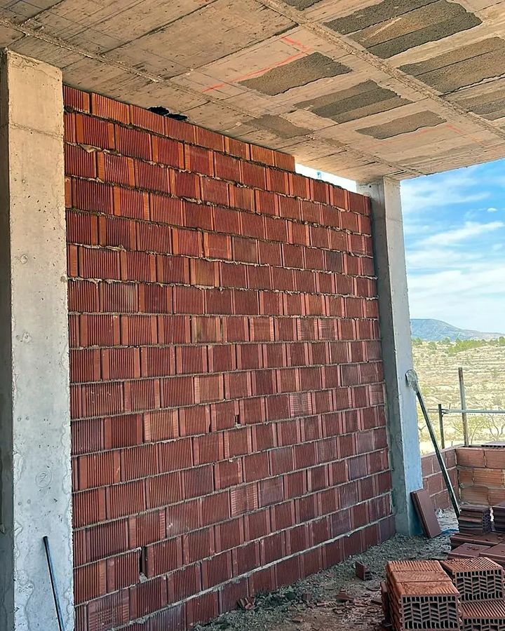
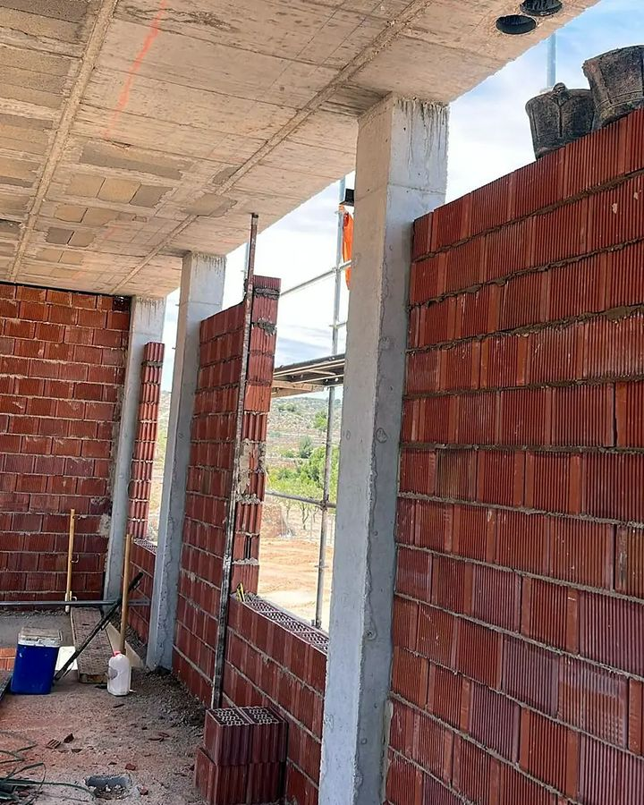
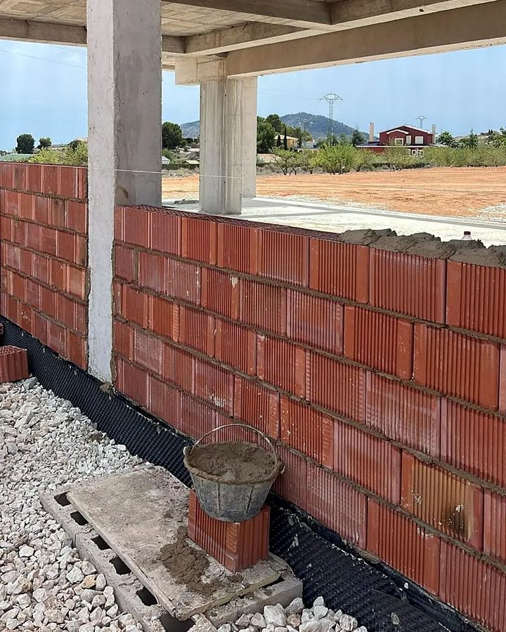
Ejecución de las medianeras de ladrillo cerámico entre pilares, a lo largo de toda la parcela junto a las edificaciones colindantes.
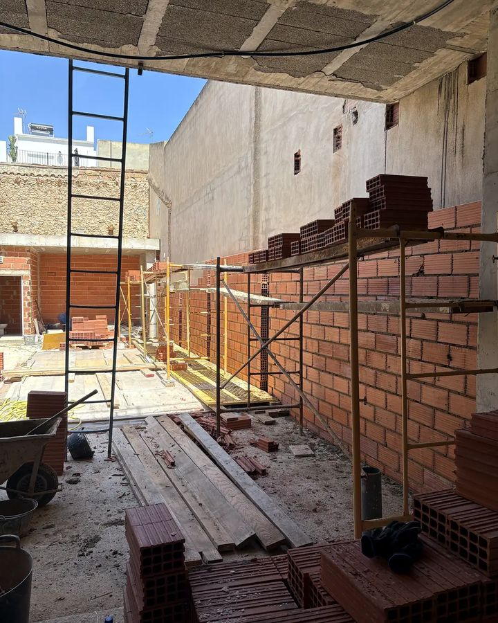
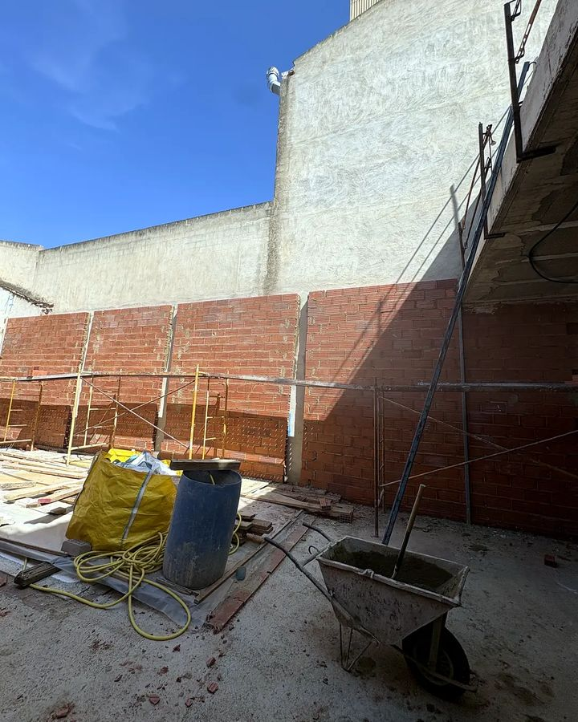
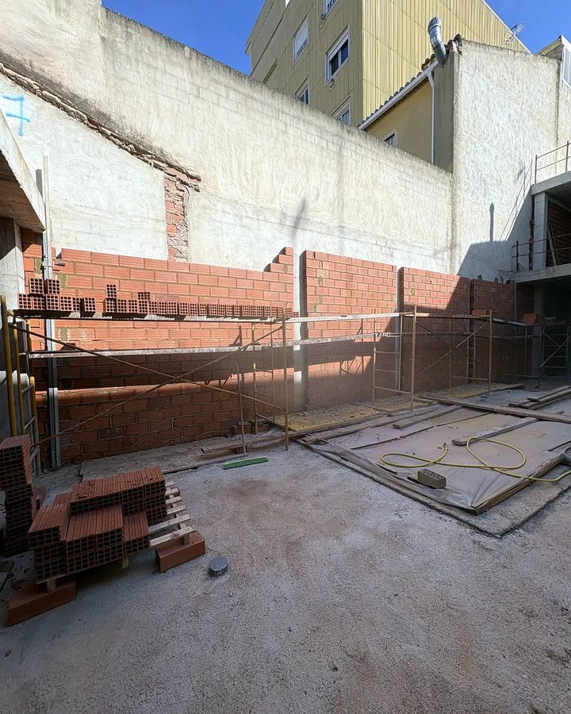
06 / 08
Obras realizadas
Tabiquería interior de ladrillo cerámico en la ampliación de un chalet, incluida la planta bajo cubierta inclinada.
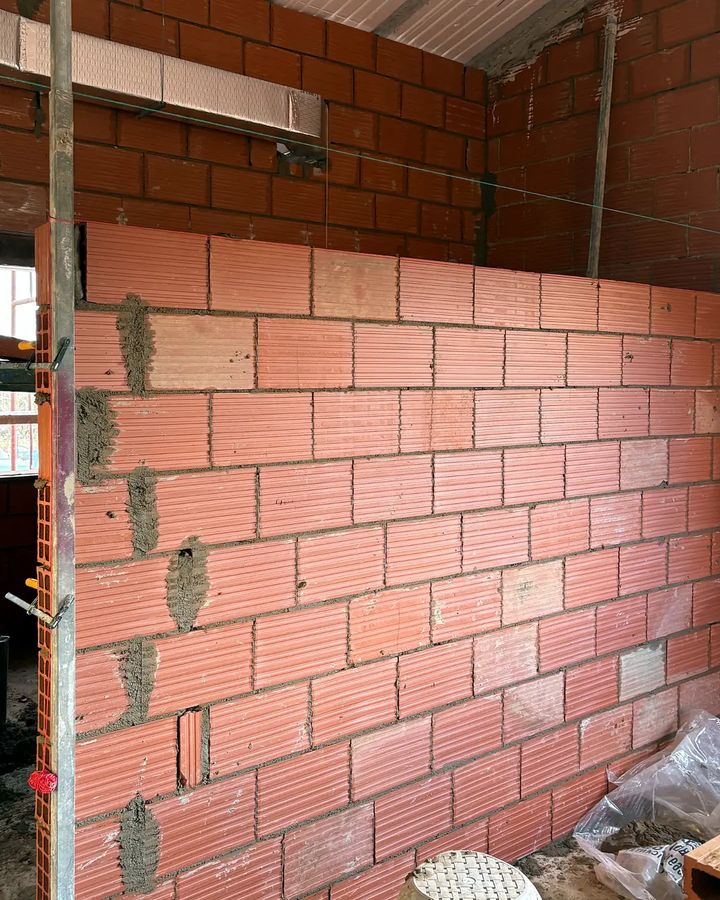
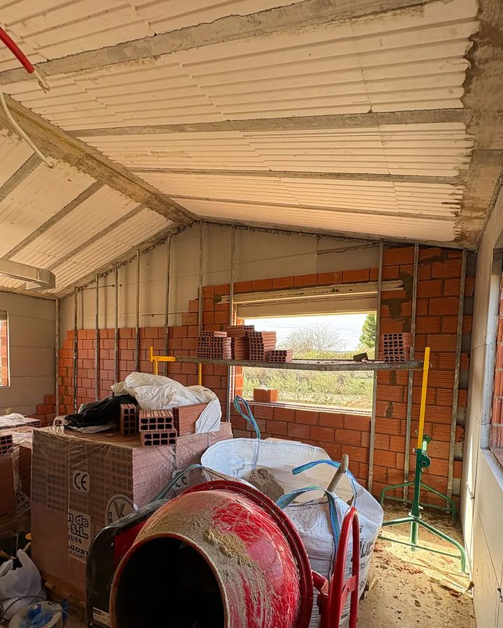
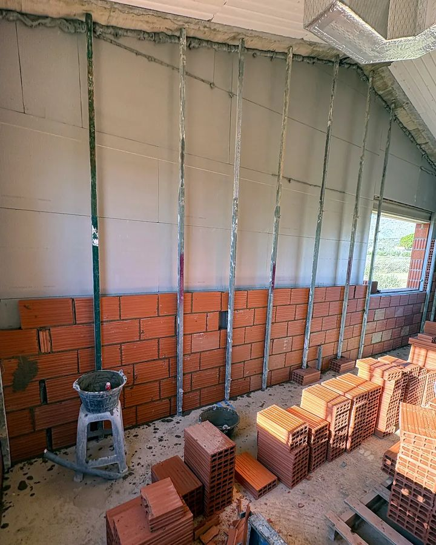
Transformación de un local en planta baja en vivienda: replanteo, nueva distribución con tabiquería de ladrillo y cerramiento de la antigua fachada.
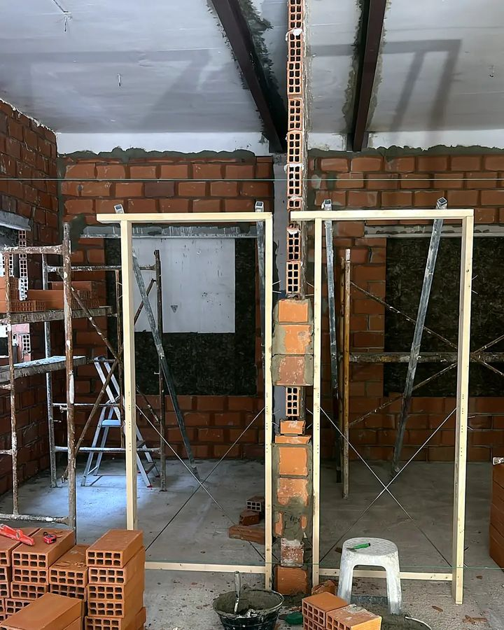
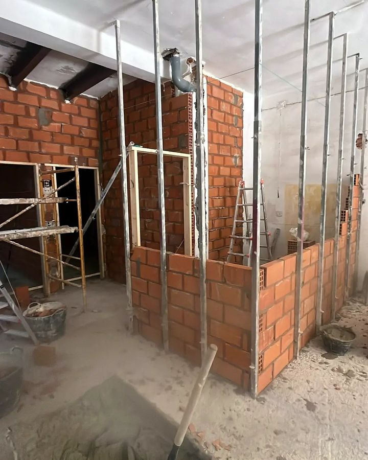
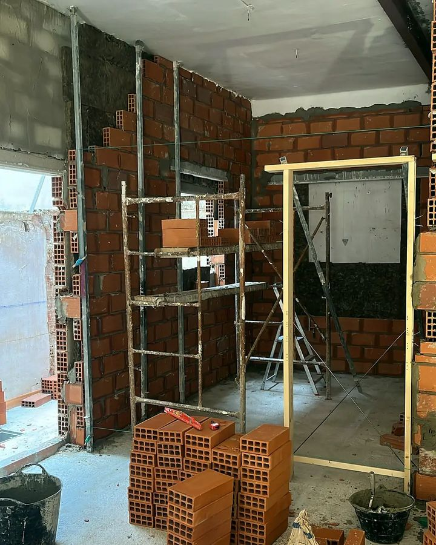
07 / 08
Contacto
Cuéntanos qué necesitas y te pasamos presupuesto por m² sin compromiso.
Guarda el contactoEscanea el código y tendrás la tarjeta en el móvil.